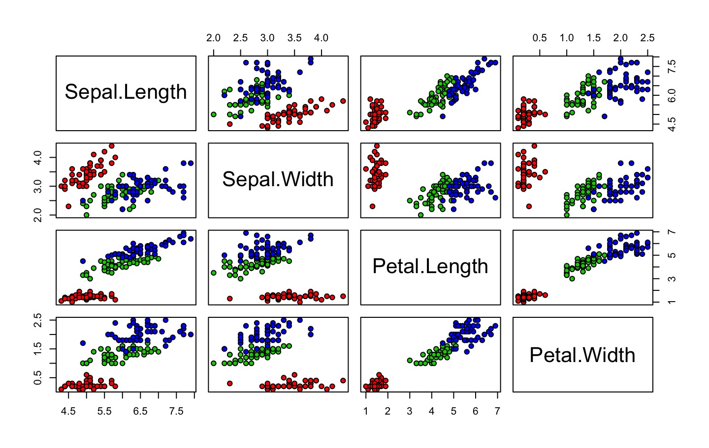

Example presentation
Get it from GitHub: https://github.com/mkearney/uslides.
This is an R Markdown presentation. Markdown is a simple formatting syntax for authoring HTML, PDF, and MS Word documents. For more details on using R Markdown see http://rmarkdown.rstudio.com.
When you click the Knit button a document will be generated that includes both content as well as the output of any embedded R code chunks within the document.
These slides use a template from the shower presentation system. Notable features:
Shower [’ʃəuə] noun. A person or thing that shows.
What is it? Your fathers lightsaber. This is the weapon of a Jedi Knight. Not as clumsy or as random as a blaster. An elegant weapon for a more civilized time. For over a thousand generations the Jedi Knights were the guardians of peace and justice in the Old Republic. Before the dark times, before the Empire. How did my father die? A young Jedi named Darth Vader, who was a pupil of mine until he turned to evil, helped the Empire hunt down and destroy the Jedi Knights.
How did I get into this mess? I really don’t know how. We seem to be made to suffer.
It’s our lot in life. I’ve got to rest before I fall apart.
Formulas are rendered by KaTeX, https://github.com/Khan/KaTeX
It supports both inline: \(y = x / 2\) and displayed formulas:
\[ x_{1,2} = \frac{- b \pm \sqrt{b^2 - 4ac}}{2a} \]
Learning more about programming is a long-term investment: it won’t pay off immediately, but in the long term it will allow you to solve new problems more quickly, and let you reuse your insights from previous problems in new scenarios.
-Hadley Wickham
#hw <- rtweet::search_tweets("rstats")
mtcars
## mpg cyl disp hp drat wt qsec vs am gear carb
## Mazda RX4 21.0 6 160.0 110 3.90 2.620 16.46 0 1 4 4
## Mazda RX4 Wag 21.0 6 160.0 110 3.90 2.875 17.02 0 1 4 4
## Datsun 710 22.8 4 108.0 93 3.85 2.320 18.61 1 1 4 1
## Hornet 4 Drive 21.4 6 258.0 110 3.08 3.215 19.44 1 0 3 1
## Hornet Sportabout 18.7 8 360.0 175 3.15 3.440 17.02 0 0 3 2
## Valiant 18.1 6 225.0 105 2.76 3.460 20.22 1 0 3 1
## Duster 360 14.3 8 360.0 245 3.21 3.570 15.84 0 0 3 4
## Merc 240D 24.4 4 146.7 62 3.69 3.190 20.00 1 0 4 2
## Merc 230 22.8 4 140.8 95 3.92 3.150 22.90 1 0 4 2
## Merc 280 19.2 6 167.6 123 3.92 3.440 18.30 1 0 4 4
## Merc 280C 17.8 6 167.6 123 3.92 3.440 18.90 1 0 4 4
## Merc 450SE 16.4 8 275.8 180 3.07 4.070 17.40 0 0 3 3
## Merc 450SL 17.3 8 275.8 180 3.07 3.730 17.60 0 0 3 3
## Merc 450SLC 15.2 8 275.8 180 3.07 3.780 18.00 0 0 3 3
## Cadillac Fleetwood 10.4 8 472.0 205 2.93 5.250 17.98 0 0 3 4
## Lincoln Continental 10.4 8 460.0 215 3.00 5.424 17.82 0 0 3 4
## Chrysler Imperial 14.7 8 440.0 230 3.23 5.345 17.42 0 0 3 4
## Fiat 128 32.4 4 78.7 66 4.08 2.200 19.47 1 1 4 1
## Honda Civic 30.4 4 75.7 52 4.93 1.615 18.52 1 1 4 2
## Toyota Corolla 33.9 4 71.1 65 4.22 1.835 19.90 1 1 4 1
## Toyota Corona 21.5 4 120.1 97 3.70 2.465 20.01 1 0 3 1
## Dodge Challenger 15.5 8 318.0 150 2.76 3.520 16.87 0 0 3 2
## AMC Javelin 15.2 8 304.0 150 3.15 3.435 17.30 0 0 3 2
## Camaro Z28 13.3 8 350.0 245 3.73 3.840 15.41 0 0 3 4
## Pontiac Firebird 19.2 8 400.0 175 3.08 3.845 17.05 0 0 3 2
## Fiat X1-9 27.3 4 79.0 66 4.08 1.935 18.90 1 1 4 1
## Porsche 914-2 26.0 4 120.3 91 4.43 2.140 16.70 0 1 5 2
## Lotus Europa 30.4 4 95.1 113 3.77 1.513 16.90 1 1 5 2
## Ford Pantera L 15.8 8 351.0 264 4.22 3.170 14.50 0 1 5 4
## Ferrari Dino 19.7 6 145.0 175 3.62 2.770 15.50 0 1 5 6
## Maserati Bora 15.0 8 301.0 335 3.54 3.570 14.60 0 1 5 8
## Volvo 142E 21.4 4 121.0 109 4.11 2.780 18.60 1 1 4 2| mpg | cyl | disp | hp | |
|---|---|---|---|---|
| Mazda RX4 | 21 | 6 | 160 | 110 |
| Mazda RX4 Wag | 21 | 6 | 160 | 110 |
| Datsun 710 | 22.8 | 4 | 108 | 93 |
| Hornet 4 Drive | 21.4 | 6 | 258 | 110 |
| Hornet Sportabout | 18.7 | 8 | 360.0 | 175 |
| Valiant | 18.1 | 6 | 225.0 | 105 |
| Duster 360 | 14.3 | 8 | 360.0 | 245 |
